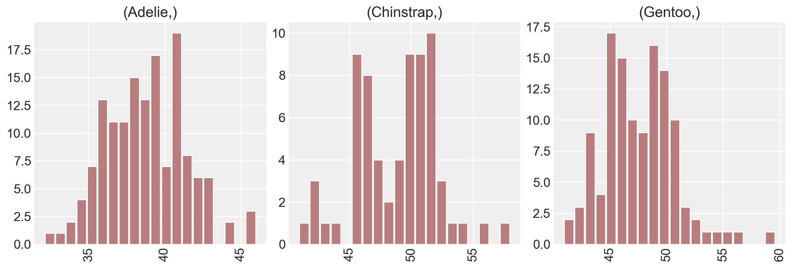

import pandas as pd
import numpy as np
import matplotlib.pyplot as plt
from scipy import stats
import arviz as az
import seaborn as sns6 Pandas (2)
Il riepilogo dei dati in Pandas è un’attività fondamentale nell’analisi dei dati e consiste nel calcolare statistiche descrittive di un insieme di dati. In questo capitolo esamineremo come calcolare le statistiche descrittive di base usando Pandas (si veda il capitolo {ref}loc-scale-notebook).
6.1 Preparazione del Notebook
%config InlineBackend.figure_format = 'retina'
RANDOM_SEED = 42
rng = np.random.default_rng(RANDOM_SEED)
az.style.use("arviz-darkgrid")
sns.set_theme(palette="colorblind")6.2 Calcolo delle statistiche descrittive
Agli oggetti Pandas possono essere applicati vari metodi matematici e statistici. La maggior parte di questi rientra nella categoria della riduzione di dati o delle statistiche descrittive. Rispetto ai metodi degli array NumPy, i metodi Pandas consentono la gestione dei dati mancanti. Alcuni dei metodi disponibili per gli oggetti Pandas sono elencati di seguito.
| Method | Description |
|---|---|
| count | Number of non-NA values |
| describe | Compute set of summary statistics |
| min, max | Compute minimum and maximum values |
| argmin, argmax | Compute index locations (integers) at which minimum or maximum value is obtained, respectively; not available on DataFrame objects |
| idxmin, idxmax | Compute index labels at which minimum or maximum value is obtained, respectively |
| quantile | Compute sample quantile ranging from 0 to 1 (default: 0.5) |
| sum | Sum of values |
| mean | Mean of values |
| median | Arithmetic median (50% quantile) of values |
| mad | Mean absolute deviation from mean value |
| prod | Product of all values |
| var | Sample variance of values |
| std | Sample standard deviation of values |
| skew | Sample skewness (third moment) of values |
| kurt | Sample kurtosis (fourth moment) of values |
| cumsum | Cumulative sum of values |
| cummin, cummax | Cumulative minimum or maximum of values, respectively |
| cumprod | Cumulative product of values |
| diff | Compute first arithmetic difference (useful for time series) |
| pct_change | Compute percent changes |
Tali metodi possono essere applicati a tutto il DataFrame, oppure soltanto ad una o più colonne.
Per fare un esempio, esamineremo nuovamente i dati penguins.csv. Come in precedenza, dopo avere caricato i dati, rimuoviamo i dati mancanti.
df = pd.read_csv("../data/penguins.csv")
df.dropna(inplace=True)Usiamo il metodo describe() su tutto il DataFrame:
df.describe(include="all")| species | island | bill_length_mm | bill_depth_mm | flipper_length_mm | body_mass_g | sex | year | |
|---|---|---|---|---|---|---|---|---|
| count | 333 | 333 | 333.000000 | 333.000000 | 333.000000 | 333.000000 | 333 | 333.000000 |
| unique | 3 | 3 | NaN | NaN | NaN | NaN | 2 | NaN |
| top | Adelie | Biscoe | NaN | NaN | NaN | NaN | male | NaN |
| freq | 146 | 163 | NaN | NaN | NaN | NaN | 168 | NaN |
| mean | NaN | NaN | 43.992793 | 17.164865 | 200.966967 | 4207.057057 | NaN | 2008.042042 |
| std | NaN | NaN | 5.468668 | 1.969235 | 14.015765 | 805.215802 | NaN | 0.812944 |
| min | NaN | NaN | 32.100000 | 13.100000 | 172.000000 | 2700.000000 | NaN | 2007.000000 |
| 25% | NaN | NaN | 39.500000 | 15.600000 | 190.000000 | 3550.000000 | NaN | 2007.000000 |
| 50% | NaN | NaN | 44.500000 | 17.300000 | 197.000000 | 4050.000000 | NaN | 2008.000000 |
| 75% | NaN | NaN | 48.600000 | 18.700000 | 213.000000 | 4775.000000 | NaN | 2009.000000 |
| max | NaN | NaN | 59.600000 | 21.500000 | 231.000000 | 6300.000000 | NaN | 2009.000000 |
Se desideriamo solo le informazioni relative alle variabili qualitative, usiamo l’argomento include='object'.
df.describe(include="object")| species | island | sex | |
|---|---|---|---|
| count | 333 | 333 | 333 |
| unique | 3 | 3 | 2 |
| top | Adelie | Biscoe | male |
| freq | 146 | 163 | 168 |
I valori NaN indicano dati mancanti. Ad esempio, la colonna species contiene stringhe, quindi non esiste alcun valore per mean; allo stesso modo, bill_length_mm è una variabile numerica, quindi non vengono calcolate le statistiche riassuntive per le variabili categoriali (unique, top, freq).
Esaminimiamo le colonne singolarmente. Ad esempio, troviamo la media della colonna bill_depth_mm.
df["bill_depth_mm"].mean()17.164864864864867Per la deviazione standard usiamo il metodo std(). Si noti l’argomento opzionale ddof:
df["bill_length_mm"].std(ddof=1)5.46866834264756La cella seguente fornisce l’indice della riga nella quale la colonna bill_length_mm assume il suo valore massimo:
df["bill_length_mm"].idxmax()185La colonna species nel DataFrame df è una variabile a livello nominale. Elenchiamo le modalità di tale variabile.
df["species"].unique()array(['Adelie', 'Gentoo', 'Chinstrap'], dtype=object)Il metodo value_counts ritorna la distribuzione di frequenza assoluta:
df["species"].value_counts()species
Adelie 146
Gentoo 119
Chinstrap 68
Name: count, dtype: int64Per le frequenze relative si imposta l’argomento normalize=True:
print(df["species"].value_counts(normalize=True))species
Adelie 0.438438
Gentoo 0.357357
Chinstrap 0.204204
Name: proportion, dtype: float64Consideriamo la lunghezza del becco dei pinguini suddivisa per ciascuna specie. Con l’istruzione seguente, possiamo generare gli istogrammi corrispondenti che rappresentano la distribuzione della lunghezza del becco in ciascun gruppo.
_ = df.hist(
column="bill_length_mm",
by=["species"],
bins=20,
figsize=(12, 4),
layout=(1, 3),
rwidth=0.9,
)
df| species | island | bill_length_mm | bill_depth_mm | flipper_length_mm | body_mass_g | sex | year | |
|---|---|---|---|---|---|---|---|---|
| 0 | Adelie | Torgersen | 39.1 | 18.7 | 181.0 | 3750.0 | male | 2007 |
| 1 | Adelie | Torgersen | 39.5 | 17.4 | 186.0 | 3800.0 | female | 2007 |
| 2 | Adelie | Torgersen | 40.3 | 18.0 | 195.0 | 3250.0 | female | 2007 |
| 4 | Adelie | Torgersen | 36.7 | 19.3 | 193.0 | 3450.0 | female | 2007 |
| 5 | Adelie | Torgersen | 39.3 | 20.6 | 190.0 | 3650.0 | male | 2007 |
| ... | ... | ... | ... | ... | ... | ... | ... | ... |
| 339 | Chinstrap | Dream | 55.8 | 19.8 | 207.0 | 4000.0 | male | 2009 |
| 340 | Chinstrap | Dream | 43.5 | 18.1 | 202.0 | 3400.0 | female | 2009 |
| 341 | Chinstrap | Dream | 49.6 | 18.2 | 193.0 | 3775.0 | male | 2009 |
| 342 | Chinstrap | Dream | 50.8 | 19.0 | 210.0 | 4100.0 | male | 2009 |
| 343 | Chinstrap | Dream | 50.2 | 18.7 | 198.0 | 3775.0 | female | 2009 |
333 rows × 8 columns
6.2.1 Aggregazione dei dati
Il riepilogo di più valori in un unico indice va sotto il nome di “aggregazione” dei dati. Il metodo aggregate() può essere applicato ai DataFrame e restituisce un nuovo DataFrame più breve contenente solo i valori aggregati. Il primo argomento di aggregate() specifica quale funzione o quali funzioni devono essere utilizzate per aggregare i dati. Molte comuni funzioni di aggregazione sono disponibili nel modulo statistics. Ad esempio:
median(): la mediana;mean(): la media;stdev(): la deviazione standard;
Se vogliamo applicare più funzioni di aggregazione, allora possiamo raccogliere prima le funzioni in una lista e poi passare la lista ad aggregate().
# List of summary statistics functions
summary_stats = [np.min, np.median, np.mean, np.std, np.max]
# Calculate summary statistics for numeric columns using aggregate
result = df[
["bill_length_mm", "bill_depth_mm", "flipper_length_mm", "body_mass_g"]
].aggregate(summary_stats)
print(result) bill_length_mm bill_depth_mm flipper_length_mm body_mass_g
min 32.100000 13.100000 172.000000 2700.000000
median 44.500000 17.300000 197.000000 4050.000000
mean 43.992793 17.164865 200.966967 4207.057057
std 5.468668 1.969235 14.015765 805.215802
max 59.600000 21.500000 231.000000 6300.000000Si noti che Pandas ha applicato le funzioni di riepilogo a ogni colonna, ma, per alcune colonne, le statistiche riassuntive non si possono calcolare, ovvero tutte le colonne che contengono stringhe anziché numeri. Di conseguenza, vediamo che alcuni dei risultati per tali colonne sono contrassegnati con “NaN”. Questa è un’abbreviazione di “Not a Number”, talvolta utilizzata nell’analisi dei dati per rappresentare valori mancanti o non definiti.
Molto spesso vogliamo calcolare le statistiche descrittive separatamente per ciascun gruppo di osservazioni – per esempio, nel caso presente, potremmo volere distinguere le statistiche descrittive in base alla specie dei pinguini. Questo risultato si ottiene con il metodo .groupby().
Il nome “group by” deriva da un comando nel linguaggio del database SQL, ma forse è più semplice pensarlo nei termini coniati da Hadley Wickham: split, apply, combine. Un esempio canonico di questa operazione di split-apply-combine, in cui “apply” è un’aggregazione di sommatoria, è illustrato nella figura seguente:
vjovpxb ../images/split_apply_combine.png :height: 400px :name: split_apply_combine
La figura rende chiaro ciò che si ottiene con groupby:
- la fase “split” prevede la suddivisione e il raggruppamento di un DataFrame in base al valore della chiave specificata;
- la fase “apply” implica il calcolo di alcune funzioni, solitamente un’aggregazione, una trasformazione o un filtro, all’interno dei singoli gruppi;
- la fase “combine” unisce i risultati di queste operazioni in una matrice di output.
Per esempio, ragruppiamo le osservazioni body_mass_g in funzione delle modalità della variabile species.
grouped = df["body_mass_g"].groupby(df["species"])<pandas.core.groupby.generic.SeriesGroupBy object at 0x16276b490>Calcoliamo ora la media della variabile body_mass_g separatamente per ciascun gruppo di osservazioni.
grouped.mean()species
Adelie 3706.164384
Chinstrap 3733.088235
Gentoo 5092.436975
Name: body_mass_g, dtype: float64È possibile applicare criteri di classificazione multipli. Per fare un altro esempio, contiamo il numero di pinguini presenti sulle tre isole, distinguendoli per specie e genere.
df.groupby(["island", "species", "sex"]).size()island species sex
Biscoe Adelie female 22
male 22
Gentoo female 58
male 61
Dream Adelie female 27
male 28
Chinstrap female 34
male 34
Torgersen Adelie female 24
male 23
dtype: int64Con il metodo aggregate() possiamo applicare diverse funzioni di aggregazione alle osservazioni ragruppate. Ad esempio
summary_stats = [np.mean, np.std]
# Group by "species" and calculate summary statistics for numeric columns
result = df.groupby("species").agg(
{col: summary_stats for col in df.columns if pd.api.types.is_numeric_dtype(df[col])}
)
print(result) bill_length_mm bill_depth_mm flipper_length_mm \
mean std mean std mean
species
Adelie 38.823973 2.662597 18.347260 1.219338 190.102740
Chinstrap 48.833824 3.339256 18.420588 1.135395 195.823529
Gentoo 47.568067 3.106116 14.996639 0.985998 217.235294
body_mass_g year
std mean std mean std
species
Adelie 6.521825 3706.164384 458.620135 2008.054795 0.811816
Chinstrap 7.131894 3733.088235 384.335081 2007.970588 0.863360
Gentoo 6.585431 5092.436975 501.476154 2008.067227 0.789025 Nella cella seguente troviamo la media di body_mass_g e flipper_length_mm separatamente per ciascuna isola e ciascuna specie:
df.groupby(["island", "species"])[["body_mass_g", "flipper_length_mm"]].mean()| body_mass_g | flipper_length_mm | ||
|---|---|---|---|
| island | species | ||
| Biscoe | Adelie | 3709.659091 | 188.795455 |
| Gentoo | 5092.436975 | 217.235294 | |
| Dream | Adelie | 3701.363636 | 189.927273 |
| Chinstrap | 3733.088235 | 195.823529 | |
| Torgersen | Adelie | 3708.510638 | 191.531915 |
Facciamo la stessa cosa per la deviazione standard.
df.groupby(["island", "species"])[["body_mass_g", "flipper_length_mm"]].std(ddof=1)| body_mass_g | flipper_length_mm | ||
|---|---|---|---|
| island | species | ||
| Biscoe | Adelie | 487.733722 | 6.729247 |
| Gentoo | 501.476154 | 6.585431 | |
| Dream | Adelie | 448.774519 | 6.480325 |
| Chinstrap | 384.335081 | 7.131894 | |
| Torgersen | Adelie | 451.846351 | 6.220062 |
Prestiamo attenzione alla seguente sintassi:
summary_stats = (
df.loc[:, ["island", "species", "body_mass_g", "flipper_length_mm"]]
.groupby(["island", "species"])
.aggregate(["mean", "std", "count"])
)
summary_stats| body_mass_g | flipper_length_mm | ||||||
|---|---|---|---|---|---|---|---|
| mean | std | count | mean | std | count | ||
| island | species | ||||||
| Biscoe | Adelie | 3709.659091 | 487.733722 | 44 | 188.795455 | 6.729247 | 44 |
| Gentoo | 5092.436975 | 501.476154 | 119 | 217.235294 | 6.585431 | 119 | |
| Dream | Adelie | 3701.363636 | 448.774519 | 55 | 189.927273 | 6.480325 | 55 |
| Chinstrap | 3733.088235 | 384.335081 | 68 | 195.823529 | 7.131894 | 68 | |
| Torgersen | Adelie | 3708.510638 | 451.846351 | 47 | 191.531915 | 6.220062 | 47 |
Nell’istruzione precedente selezioniamo tutte le righe (:) di tre colonne di interesse: df.loc[:, ["island", "species", "body_mass_g", "flipper_length_mm"]]. L’istruzione .groupby(["island", "species"]) ragruppa le osservazioni (righe) secondo le modalità delle variabili island e species. Infine .aggregate(["mean", "std", "count"]) applica i metodi statistici specificati a ciascun gruppo di osservazioni. Con questa sintassi la sequenza delle operazioni da eseguire diventa molto intuitiva.
È possibile approfondire questo argomento consultanto il capitolo 10 del testo Python for Data Analysis di {cite:t}mckinney2022python.
6.3 Informazioni sull’Ambiente di Sviluppo
%load_ext watermark
%watermark -n -u -v -iv -w -mLast updated: Mon Jan 29 2024
Python implementation: CPython
Python version : 3.11.7
IPython version : 8.19.0
Compiler : Clang 16.0.6
OS : Darwin
Release : 23.3.0
Machine : x86_64
Processor : i386
CPU cores : 8
Architecture: 64bit
scipy : 1.11.4
seaborn : 0.13.0
numpy : 1.26.2
pandas : 2.1.4
arviz : 0.17.0
matplotlib: 3.8.2
Watermark: 2.4.3